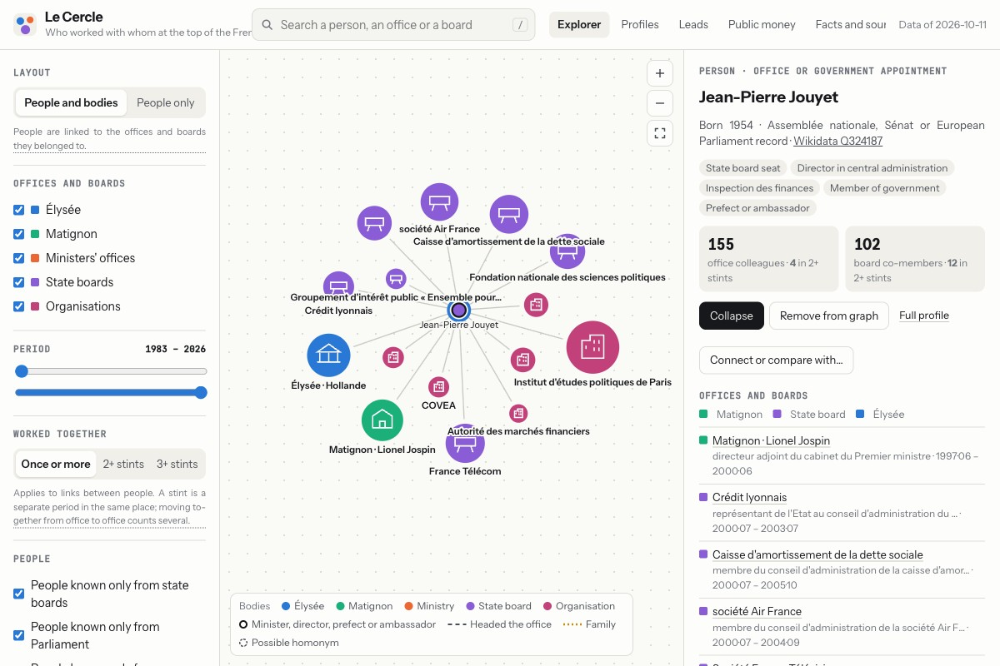

Field notes — 02
Mapping the French state from public records.
Le Cercle is a side project that turns four million Journal officiel appointments and a dozen open datasets into a map of who staffs the top of the French state, and who they are tied to. This is what it took to make the map trustworthy without ever editing a row by hand.
The idea
The French state publishes a remarkable amount about itself. Every appointment to a minister's office, the Élysée or Matignon is a decree in the Journal officiel. Every move to the private sector leaves a trace: an opinion from the ethics authority, a directorship in the company register, a declaration of interests. Public contracts, subsidies, lobbying activities and decorations are all open data. What nobody had done was join them.
So that became the project: one pipeline that reads every source, one model of people, offices and organisations, and one static site where you can open a person and see their career, who sat in the same office at the same time, and which companies, lobbies and contracts surround them. Today it covers about 52,000 people and 10,000 organisations, from 1990 to last week, and the whole thing is a folder of files on GitHub Pages.

Constraints
- Public records only. Nothing scraped from the press, nothing inferred from social networks. Every fact on the site links back to the decree, declaration or register entry it came from.
- No hand fixes. Fifty thousand people cannot be curated. When a profile is wrong, the only allowed response is a rule that fixes the whole class of wrong profiles, applied to the raw data on the next build. Not once has a row been edited by hand, and that is the rule that shaped everything else.
- A name is not an identity. France has thirteen public figures called Philippe Martin. Two records are the same person only when the name and the birth date agree; a name alone is never enough, whatever the source.
- Cheap to run, cheap to host. A side project has to survive months of neglect. Every source is snapshotted, the full rebuild runs offline in about a minute, and the output is static files served for free.
- Respectful of the people in it. Pages that name people are kept out of search engines, there is a documented way to object, and the site shows public roles, never private life.
The design
A pipeline, not a database
The pipeline is a .NET console program and a folder of SQL files. Each source is fetched into a CSV by one small step: the JORFSearch dump of the Journal officiel, the HATVP declarations and lobby register, the Assemblée and Sénat open data, the European Parliament API, the company register, BODACC, public contracts, subsidies, Wikidata, the INSEE deaths file. The CSVs are loaded into DuckDB, where the rules live as plain SQL and one C# step builds the model. Then eighty-odd checks run, and a tiny ASP.NET server exports the whole site: a few JSON files and a page per person, office and organisation.
That shape was chosen for the rebuild, not the query. There is no server at runtime, nothing to keep alive, and a rule change is a one-minute rerun followed by a diff of what moved. The expensive part, fetching, happens rarely and is cached in snapshots committed next to the code.
Identity is the whole problem
Every source spells people its own way. The Journal officiel writes surnames in capitals and moves particles around; the HATVP uses the declarant's own spelling; the company register knows a birth month but no first name beyond the first; Wikidata knows a birth date to the day, or only the year, or only that the person exists. The first version of the site had one person per spelling.
The fix is one key, computed the same way everywhere, and a strict precedence of sources for the birth date: an official chamber record beats the register, which beats Wikidata. A Wikidata year-only date stays a year, never padded to the first of January, because a padded date later looks like a precise one and merges people who should stay apart. A register that only knows the birth month can still confirm a Wikidata date in the same month. Each of these is a rule with a counter: the build prints how many people share a name and a birth year, and a rule that lowers the counter without raising another one is a good rule.
Time is the second problem
A decree says when someone joined a minister's office. It rarely says when they left: only about a fifth of departures are published. So the end of a stint is itself a rule, the earliest of the departure decree, the next appointment, a posting decided in the council of ministers, or the end of the minister's own tenure. Each clause was added after a real profile exposed the gap. The last two came from one person's page, where a chief of staff appeared to serve a minister for a year after he had become head of the national police, and to sit in an office named after a government rather than a minister because the decree only said "ministre d'État". Both rules, once written, moved several hundred other stints.
Leads, not conclusions
Once people and organisations are joined, the interesting tables fall out: the revolving door, people given a senior post the week their minister left, dual hats, lobbies working on a ministry one of their people came from, decorations proposed by a ministry the person served. The site calls them leads and says so on every page: each row is a coincidence of dates and names in public records, a place to start reading, not a finding. Samples of every table are checked against the sources and the sheets live in the repository, including the one that was a third wrong before its rule was tightened.
Built in conversation
Almost all of the code was written with an AI agent, in long sessions where I set the rules and reviewed the diffs. The rules above are the part that mattered: no hand fixes, never match a person on name alone, every rule gets a counter, nothing is published without my word. With those fixed, the agent could take a bad profile, measure the pattern across the database, propose a rule, rerun the build and hand me the list of changed rows to sample. The method from my AI practice notes, applied to data instead of services.
What it taught me
- Counters beat opinions. Printing eight anomaly counts after every build turned "does this look right" into a number that goes down or up. Most rules were accepted or rejected on that alone.
- A diff is a review. Rules that touch hundreds of rows are frightening until every changed row is in a file you can sample. The audit sheets caught the false positives that reasoning about the rule did not.
- Static wins for this kind of site. 155 megabytes of files, one deploy script, nothing to monitor. A database would have made the queries easier and the project heavier.
- Open data is open, not joinable. The hard part was never fetching. Every dataset was built for its own purpose, and the keys that let them meet had to be invented, tested and defended against namesakes.
The site is at cercle.corentinsueur.com. Questions, corrections or a dataset I missed: email me.